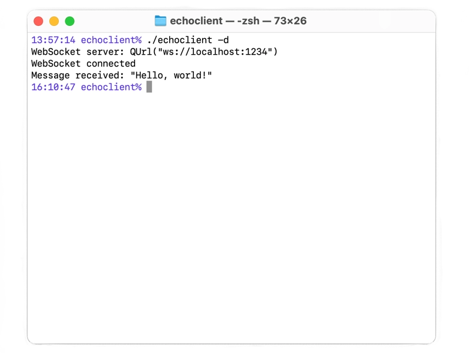

Secure WebSocket Echo Client
A simple client application using secure WebSockets (wss).
The Secure WebSocket Echo Client example shows how to use the WebSocket class to implement an echo client over a secure connection (wss). It connects to a server and sends a message, and when it receives a message back, it prints it out and exits. SSL support is required for this example to work.
This example connects by default to localhost at port 1234 using a secure connection. It trusts the certificates signed by the CA certificates configured in the SSL backend, and in addition trusts the certificate used by Secure WebSocket Echo Server.

See also WebSocket Echo Client and Secure WebSocket Echo Server.